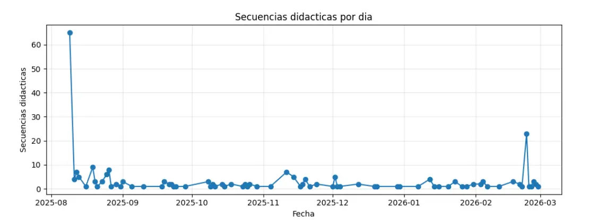

Deciding not to scale the product
The explanation we had
For a long time the team read the product's low usage as a relevance problem: teachers weren't planning with it because what it produced wasn't close enough to what they actually needed. That reading has a specific consequence — if the product isn't pertinent, you don't redesign it, you rethink what it is.

I wasn't convinced, and I wasn't willing to commit to a redesign on instinct. What we had was a count — a report pulled from the database that told us how little the product was used, and nothing about where teachers stopped. The tracking installed on the product had recorded a few dozen events in seven months. Before designing anything, I asked for analytics that could answer the second question, and every explanation on the table stayed a story we were telling ourselves until they arrived.
What the data changed
Once instrumentation was in place, the shape of the problem moved. Between March and June 2026, half of the people who logged in never clicked "Create plan": 113 out of 225. Around 40% came back after their first day, and 30% came back and planned. Conversion from login to a finished plan had been falling for three months, from around 70% to around 45%.
Teachers were arriving and not planning. That is not the signature of a product nobody wants — it's the signature of a product people can't get into. I argued that usability was the barrier, against the reading the team had been working from, and that rebuilding the entry flow was the way to test it.
Two hypotheses the data could not separate
The numbers told us teachers tried the product and did not return. They did not tell us why. We had two candidate explanations that pointed to very different responses.
The first: usability. The entry form was doing damage we could observe directly. A third of users left the "describe your class" field empty. Teachers told us the two context fields were confusing because it was unclear what each one did to the output. The topic field capped at 200 characters and teachers wanted to give more context than it allowed. In a usability session, one participant said the waiting time "seemed infinite."
The second: bandwidth. Most of the teachers we interviewed were dealing with burnout. A product can be perfectly usable and still lose to the fact that its user has no mental room left to adopt anything new. Our research added a third layer: teachers usually arrive with a sequence already in mind and want help with a specific activity inside it, while the product produced long, dense, complete sequences. If that misalignment was the core problem, a friendlier form would not fix it.
A redesign only addresses the first hypothesis. We knew that when we chose it.
Why we rebuilt anyway
Under traditional development costs, rebuilding the core of a product to test a hypothesis is not a defensible bet, and we would not have made it. What changed the math was tooling. With Claude Design for prototyping and Claude Code for implementation, the cost of building the new version dropped to the point where shipping it became the cheapest available way to test whether usability was the barrier. The decision was made as a team, with the CEO, and it included a third motive beyond the hypothesis: shedding legacy code the product had been dragging.
The bet, stated plainly: if usability was the barrier, the new version would show it in how many teachers made it to a first plan. If it was not, we would have paid a low price to eliminate the largest variable and could look at the harder problems with cleaner data.
The grade as home
My specific contribution to the new version came from the field. Since our first usability rounds in July 2025, teachers struggled to switch subjects inside the same class. By February 2026, users were ending up with duplicated grades because the product tied each grade to a single subject. In June I traced that friction to the data model itself, and the fix shipped on June 17: subject was decoupled from grade, because primary-school teachers do not have subjects, they have grades, and they teach several subjects to the same group.
The new version takes that logic to its conclusion. Instead of starting from a planning form, the product now starts from the grade as a workspace, where the teacher sees her group's context and everything already planned for it. The form became conversational, in steps, to lower the cost of entry that the old form's empty fields were documenting week after week.

What we left out
Scope was decided against what a five-person team could build and test in weeks. Subject-differentiated questions and diversification by ability level stayed out of this version. The view for school principals and supervisors was deferred to the next cycle: the reasoning was sequential, since a layer for principals has nothing to report on until teachers are actually using the product. Institutional features wait for the teacher flow to prove itself.
What the bet returned
V2 shipped in August and ran in parallel with V1 for a month, which made a comparison possible: a cohort of new signups, and whether they complete a first plan within seven days.
On that measure, activation went from 33% to 43%. The figure holds up because V1's own activation was stable across three separate windows — 35%, 37%, 33% — which is what separates this from a seasonal swing. Teachers also came back: the share who planned again on a different day went from 15% to 49%.
The obvious objection is that V2 inherited experienced users. It didn't carry the result: 48 of V2's 75 teachers had never planned in V1, and they average 2.31 plans each against V1's 1.39.
Usability was a real barrier. It was not the only one, and this was never a controlled experiment — the two versions ran in parallel with acquisition split between them, not randomly assigned.